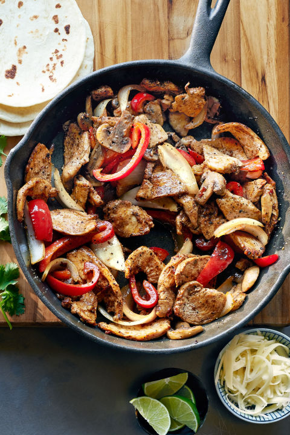
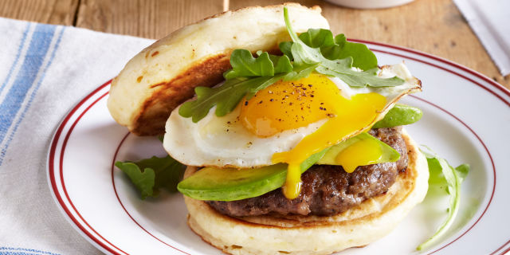

Recipe 1: Chipotle Chicken Fajitas

Ingredients
- 1 lb. boneless, skinless chicken breasts, cut into thin strips
- 1 tsp. ground cumin
- 1 tsp. chili powder
- Kosher salt
- Freshly ground black pepper
- 1 tbsp. canola oil
- 1 red bell pepper, sliced
- 1 small onion, sliced
- 1 c. sliced mushrooms
- 3 garlic cloves, chopped
- 1 tbsp. chopped chipotles in adobo
- 1 1/2 tbsp. fresh lime juice
- 8 warm flour tortillas
- Grated Cheddar cheese, for serving
- Cilantro, for serving
- Lime wedges, for serving
Directions
- Season chicken with cumin, chili powder, and salt and pepper. Heat oil in a 12-inch cast-iron skillet over medium-high heat. Add chicken and cook, stirring occasionally, until cooked through, 5 to 7 minutes. Remove to a plate; reserve skillet.
- Add pepper, onion, mushrooms, and garlic to skillet and cook, stirring occasionally, until soft, 4 to 6 minutes. Stir in chipotles, lime juice, and chicken. Cook stirring until warm. Season with salt and pepper.
- Serve chicken and vegetables with tortillas and toppings.
Source
Recipe 2: Pancake Breakfast Sandwich with Sausage and Avocado

Ingredients
- 1 3/4 c. all-purpose flour, spooned and leveled
- 4 tsp. baking powder
- 2 tsp. sugar
- 1/2 tsp. Kosher salt
- 1 1/4 c. whole milk
- 1 large egg
- 1 tbsp. unsalted butter, melted, plus more for griddle
- 3/4 lb. breakfast sausage, casings removed and shaped into 4 (3-inch) patties
- 1 avocado, sliced
- 4 fried large eggs
- 1 1/2 c. baby arugula
Directions
- Whisk together flour, baking powder, sugar, and salt in a bowl. Whisk together milk, egg, and butter in a separate bowl. Stir milk mixture into flour mixture until just blended and smooth. Let stand 15 minutes.
- Heat griddle or large nonstick skillet over medium heat; butter. Pour about ¼ cup batter for each pancake on hot griddle. Cook until puffed, tops are covered with bubbles, and edges look dry, 3 to 4 minutes. Turn and cook until plump and cooked through, 2 to 3 minutes. Place pancakes in a single layer on a baking sheet, and keep warm in a 175°F oven up to 30 minutes. Repeat with remaining batter.
- Wipe griddle clean with a paper towel and increase heat to medium-high. Cook sausage until no longer pink in the middle, 3 to 4 minutes per side.
- Top four pancakes with sausage, avocado, eggs, and arugula, dividing evenly. Top with remaining pancakes. Serve immediately.
Source